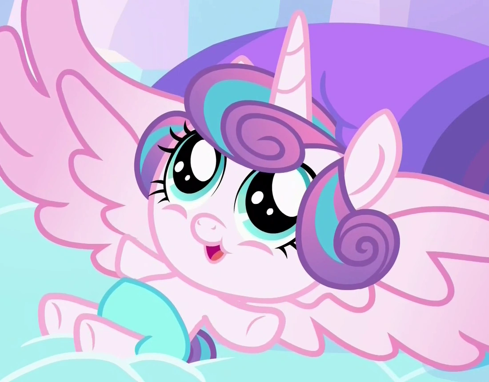

La hija de Cadence, Flurry Heart, fue el primer pony en nacer como una alicornio y heredara el poder de su madre para poder reinar en el Imperio de Cristal, pero al ser una beba, es de las alicornios de menor rango por el momento. Nunca habia nacido una alicornio, ya que el ser alicornio, es un titulo que te debes ganar demostrando que posees magia para terminar una era y empezar otras, como lo hicieron las demas.

Celestia era una unicornio tenia la magia suficiente para elevar el sol, mientras que au hermana Luna tambien era una unicornio capaz de elevar la luna e incidir en el mundo de los sueños, asi lo reconocio Star Swirl, un mago muy poderoso, vio que ya no hacia falta usar de muchos unicornios para hacer ese trabajo y les dio el cargo de Alicornios para poder educar su magia poderosa. Cadence era una pegaso abandonada que comprendio el poder de los sentimientos y que esta era mas poderoso que cualquier magia de unicornio, demostrandole a Celestia quien ya gobernaba equestria, que existia una magia mas poderesa que aprender. Twiligth era una unicornio que aprendio mas sobre esto, sabiendo utilizar artefactos que funcionaban con este tipo de magia, como los elementos de la armonia, asi fue como se le dio el cargo de alicornio para fomentar la paz entre especies.
En los demas reinos, depende mucho de lo que decide el poni mas poderoso o la poblacion si el cargo de gobernante queda como alcalde/desa, faraon/a, emperador/triz, rey/ina, etc... . Pero entre tantos podemos destacar a la Alcaldesa Maire de Ponyville; Ember, la lord dragon; Torax, el rey chamgeling; la reina Novo y su hija la princesa Skystar; el principe Rutherford; el Rey Grover;etc...